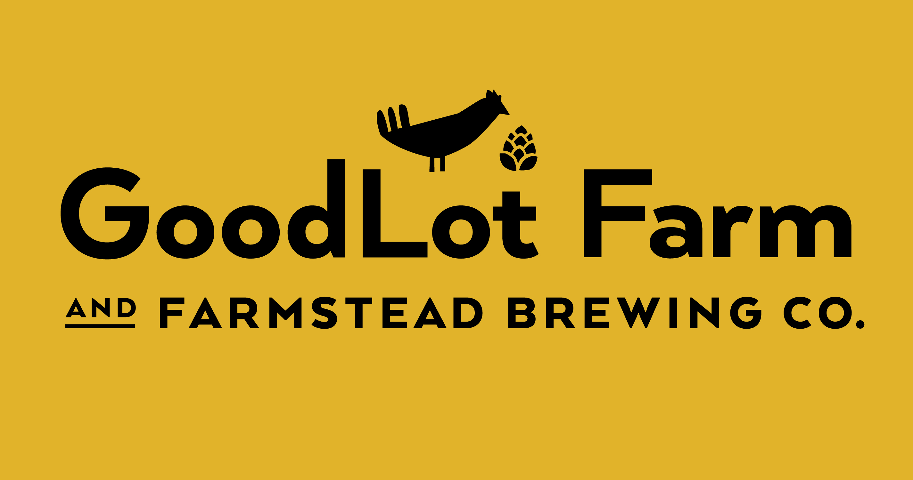

Hello! My name is Lucas Coster, and I am a Queen's University graduate with a degree in Applied Science majoring in Computer Engineering, along with a business minor focused on innovation and entrepreneurship. I’ve had a deep interest in coding since I wrote my first program in sixth grade.
During my studies, I developed a strong interest in Machine Learning and Artificial Intelligence, joining my school’s AI team and taking several deep learning and ML-related courses. I also have professional experience from a four-month software engineering internship at Briza, where I worked on a range of projects using multiple programming languages and technologies.
Outside of school and work, I’m passionate about sports—especially Ultimate Frisbee, which I’ve played since I was a kid. I recently had the opportunity to represent Canada at an international event.
I am currently working as a full-stack developer, where I’m excited to apply and continue expanding my technical skills.
Roles, responsibilities, and the work behind the numbers.
SEASON-BY-SEASON04 ENTRIES
01 / CURRENT
EllisDon
Full Stack Developer
At EllisDon, I work as a full-stack developer on the Insights and Analytics team, helping build data-driven tools and internal platforms that support decision-making across the company. My role involves developing end-to-end features, collaborating with data analysts and engineers, and contributing to scalable solutions that improve efficiency and deliver meaningful insights.
01
Develop end-to-end features
02
Collaborate with data analysts and engineers
03
Build scalable solutions for efficiency and insights
FULL STACKDATA & ANALYTICSINTERNAL PLATFORMS
02 / CONSULTING
Lucas Coster Consulting
Computer Consultant
Founded my own consulting business to help small businesses with their computer needs. Currently working with a craft brewery to help them create an application to assist with tax reporting. Past projects include website creation and database management for a local law firm.
01
Founded an independent consulting business
02
Craft brewery tax-reporting application
03
Website creation and legal database management
CONSULTINGWEB DEVELOPMENTDATABASES
03 / INTERNSHIP
Briza
Junior Software Developer
Developed using Typescript and HTML creating features for, and maintaining a full stack API platform. Worked using GitHub and Agile coding practices on complex problems in teams and independently. Tested through Docker and SQL data storages.
01
Created and maintained full-stack API platform features
02
Worked collaboratively and independently using Agile
03
Tested with Docker and SQL data storage
TYPESCRIPTHTMLGITHUBDOCKERSQL
04 / UNIVERSITY TEAM
QMIND
Design Team Member
Worked on a multitude of design teams tasked with creating cutting edge ML projects to present in CUCAI, Canada's top AI conference. The projects were year round activities and gave me experience using Tensorflow and Python.
01
Contributed to multiple machine learning design teams
02
Prepared projects for presentation at CUCAI
03
Built experience with TensorFlow and Python
MACHINE LEARNINGTENSORFLOWPYTHONCUCAI
OFF THE CLOCK · CONSULTING & SAAS SERVICES
Empowering your business with tailored software solutions and expert guidance.
What I Offer
Custom software development (web, cloud, automation)Technical consulting & project planningSoftware as a Service (SaaS) solutionsCode reviews, architecture, and mentoring
Selected client work
Law Firm Website
Website creation for an IP and Patent Law firm. Designed and deployed a professional online presence.
Handled IP and Patent applications, produced reports, and managed deadlines for legal processes.

Brewery App Consulting
Consulted on an application for a craft brewery to assist with tax reporting. Gathered requirements and researched competition.
How I Can Help
Whether you need a new application, want to optimize your workflow, or seek expert advice on your next big idea, I’m here to help. I focus on clear communication, reliable delivery, and building solutions that grow with your business.
Education, academic milestones, and the teams that shaped my game.
SEP 2020 — MAY 2024
01 · UNIVERSITY
Queen’s University
Bachelor Of Applied Science in Computer Engineering
Graduate from Computer Engineering at Queen's University studying Computer Engineering with a minor in innovation and entrepreneurship. Throughout my four years I have maintained a 3.5 and above GPA while playing Ultimate Frisbee on the University team putting me on the academic all stars list every semester.
3.5+ GPA4 YEARS University Ultimate FrisbeeEVERY SEMESTER Academic all-stars list
COMPUTER ENGINEERINGINNOVATIONENTREPRENEURSHIP
SEP 2016 — MAY 2020
02 · SECONDARY
Mayfield Secondary School
Highschool Diploma
Graduated Highscool with honours and earned a 95% average in my final year. Played full time on the football and soccer teams throughout my time as a student.
95% Final-year averageHONOURS GraduateFOOTBALL + SOCCER School teams
NEXT PLAY
Have a good one in mind?
Whether you need a new application, want to optimize your workflow, or seek expert advice on your next big idea, I’m here to help. I focus on clear communication, reliable delivery, and building solutions that grow with your business.